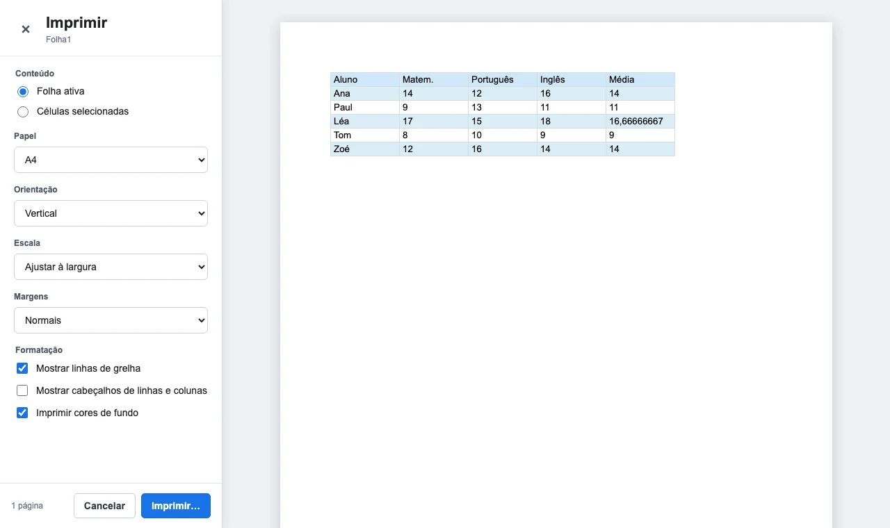

Imprimir
Ficheiro › Imprimir… ou Ctrl P mostra as páginas tal como serão impressas.

| Ajuste | Opções |
|---|---|
| Conteúdo | a folha ativa, ou as células selecionadas antes de abrir a janela |
| Papel | A4, Letter |
| Orientação | vertical, horizontal |
| Escala | Tamanho real; Ajustar à largura: todas as colunas na largura de uma página; Ajustar a uma página |
| Margens | normais, estreitas, largas |
| Formatação | grelha, cabeçalhos de linhas e colunas, cores de fundo |
Imprimir… abre a janela do navegador, onde se escolhe a impressora ou guardar em PDF.
- Só se imprimem as células, com a sua formatação: nem gráficos, nem imagens, nem sparklines.
- As linhas e colunas ocultas não se imprimem.
- Uma caixa imprime-se como TRUE ou FALSE.
- Imprime-se uma folha de cada vez.
Para imprimir com os gráficos, guardar o livro e abri-lo no Excel ou no LibreOffice.